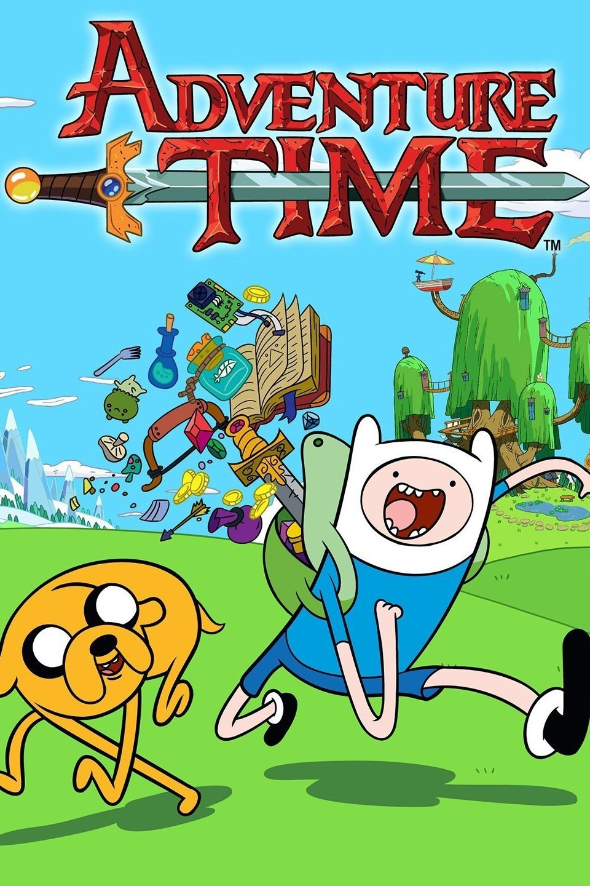

Adventure Time
"Adventure Time" is an animated television series created by Pendleton Ward that aired from 2010 to 2018. Set in the post-apocalyptic Land of Ooo, the show follows the adventures of a boy named Finn and his best friend, Jake, who is a shape-shifting dog with magical powers.
Themes
The series is known for its unique blend of whimsy, humor, and surreal storytelling, often exploring deeper themes such as friendship, loss, and identity. Finn, the brave and adventurous hero, often finds himself battling evil creatures and helping the various quirky inhabitants of Ooo, including Princess Bubblegum, Marceline the Vampire Queen, and the Ice King.